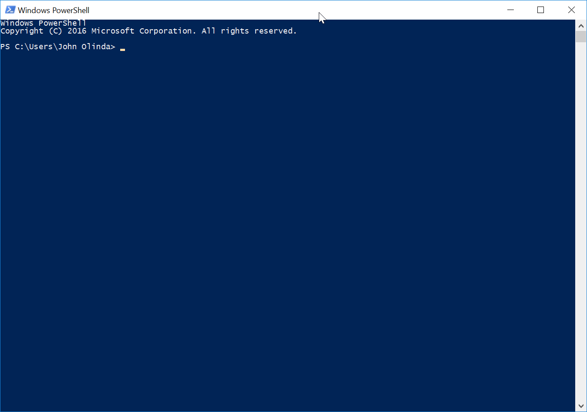

대부분의 시간을 우리는 컴퓨터나 다른 전자기기 등을 이용합니다. 즉, 우리는 그래피컬 유저 인터페이스 (그래픽 기능을 활용한 사용자 중심의 인터페이스), 혹은 GUI를 쓰고있는것이죠. 이런 인터페이스들은 사용자 (당신)과 기계사이의 시스템 일부를 이루는 층 (레이어) 입니다. GUI가 흔해지기 전, 대부분의 기계들은 명령 행 (혹은 명령 줄)으로 작동했습니다. 가장 대중적인 세개의 운영체제 - 리눅스, 윈도우, 그리고 맥 - 도 명령 행을 가지고는 있지만, 굳이 써야 할 필요는 없습니다. 우리는 이제 Bash 와 PowerShell을 이용하여 명령 행을 연습할것입니다. 만약 당신이 맥을 사용하신다면, 이번 체크포인트를 완료하기위해 당신은 윈도우 운영체제기반인 컴퓨터를 빌려야 할것입니다. 또한, Bash연습을 위해 PocketCHIPs 도 사용할것입니다.
이것은 기존보다 훨씬 긴 레슨이므로, 생각보다 너무 오래걸린다고 스트레스 받지 마세요.
이 연습을 위해 당신은 반드시 윈도우 컴퓨터를 사용해야 합니다. 그러니 만약 필요하다면
Mr. Olinda께 말씀드려서 학교 컴퓨터를 빌리십시오.
시작 메뉴를 누른 후 Windows
PowerShell 을 찾으십시오. 가장 맨 처음에 뜰 것인데, ISE로 끝나는 파워쉘을 켜지 않도록 주의하십시오.
당신은 이러한
윈도우를 볼 것입니다:

당신의 PowerShell은 사용자 이름칸에 "John Olinda" 대신 당신의 이름이 적혀있을것입니다.
그것 빼고는 다른건 다 같을것입니다. 이 레슨동안 "프롬프트" (컴퓨터가 입력할 준비가 돼었다는 신호)를 표시해줄것입니다.
PowerShell 프롬프트는 > 표시로 끝나며 당신이 명령을 입력할수 있다는 것을 나타냅니다.
가끔 당신은 터미널을 깨끗하게 만들어야 할 필요가 있을것입니다. 그럴땐
clear 을 입력하고 엔터를 누르십시오.
이 명령은 명령 행의 모든 내용을 깨끗이 지워버립니다. 하지만, 이것은 지우기만 할뿐
명령을 취소하진 않으니 안심하십시오.
이 명령은 "print working directory" 의 줄임말 입니다.
이 명령은 지금 당신이 있는 폴더를 표시할 것입니다. 이 명령은 당신이 어디에 있는지 모를 때
유용합니다. 당신이 무언갈 하기 전에,
그냥 pwd 을 프롬프트에 입력하고 엔터를 누르십시오.
이것을 세번 반복하십시오.
Mr. Olinda께 체크포인트를 검사받기위해 손을 드십시오.
이 명령은 "change directory" 의 줄임말 입니다. 이 명령은 당신이 다른 폴더로 옮겨갈수있게 해줍니다. 또한, 이 명령은 당신이 현재 사용중인 폴더를 홈 디렉터리로 리셋시킬수 있습니다. (일일히 하나하나 옮겨가는것보다 훨씬 빠릅니다.)
cd 를 입력한 후 엔터를 누르십시오. 아무것도 변하지 않은걸 눈치 채셨나요?
그 이유는 바로 당신이 컴퓨터에게 그냥 현재 (제자리)폴더로 이동하라고 명령했기 때문입니다.
cd Downloads 를 입력하고 엔터를 누르십시오. 프롬프트의
> 표시이전에 Downloads 폴더가 추가됀 것이 보이나요? 그럼, 앞으로 당신이 하는 모든 명령이
홈 디렉터리 대신 이 폴더에 적용될것입니다.
cd .. 를 입력한 후 엔터를 누르십시오. 현재 당신이 있는 폴더가
어딘지 확인해보십시오. 당신은 지금 홈 디렉터리에 있을 것입니다.
만약 당신이 어디인지 모르겠다면, pwd 를 입력하고 엔터를 눌러보십시오.
만약 당신이 다른 폴더로 들어갔다면,
cd ../.. 를 입력하여 하나의 명령으로 상위 폴더로 연속 두번 이동할수 있습니다.
우리는 이것을 다음 체크포인트에서 연습할 것입니다.
cd Mu 를 입력한 후 탭 (Tab)을 누르십시오. PowerShell이
부족한 단어를 자동으로 채워넣어서 cd .\Music\ 을 표시할것입니다.
엔터를 누르십시오. 당신이 명령 행을 사용할 때, 그저 간단히 탭을 눌러 모든 명령, 폴더, 파일 등을
자동으로 완성할수 있습니다.
다음은 cd ~ 를 입력해 보십시오. 당신은 다시 홈 디렉터리에
있을것입니다.
Mr. Olinda께 체크포인트를 검사받기위해 손을 드십시오.
이 명령은 당신이 현재 사용중인 폴더안에 새로운 폴더를 만듭니다.
당신은 지금 홈 디렉터리에 있어야합니다. 만약 아니라면,
cd ~ 을 입력하고 엔터를 누르십시오. 그 후 mkdir
test 를 입력하고 엔터를 눌러 "test" 디렉터리를 만드십시오.
그 다음 cd test 를 입력하고
엔터를 눌러 방금 만든 디렉터리로 들어가십시오.
mkdir anotherTest 를 입력하고 엔터를 눌러 test 디렉터리 안에 또 다른
디렉터리를 만드십시오. 그 후
cd anotherTest 를 입력한 후 엔터를 눌러 방금 만든 새로운 디렉터리에
들어가십시오.
Mr. Olinda께 체크포인트를 검사받기위해 손을 드십시오.
이 명령은 현재 당신이 사용하는 디렉터리 내의 파일과 폴더를을 나열합니다.
cd ~ 를 입력하고 엔터를 눌러 홈 디렉터리로 돌아가십시오.
그 후 ls 를 입력한 뒤 엔터를 눌러
디렉터리 안에 무엇이 있는지 확인해보십시오.
Mr. Olinda께 체크포인트를 검사받기위해 손을 드십시오.
이 명령은 디렉터리를 제거합니다. cd ~ 를 입력한 후 엔터를 눌러
홈 디렉터리로 돌아가십시오. Windows-E 를 눌러 윈도우 익스플로러를 켠 후
홈 디렉터리로 가십시오. 그러면 파워쉘에서 변경된 사항들이 윈도우 익스플로러에 그대로 적용된 것을
볼 수 있을것입니다. 그 후, test 디렉터리로 이동하십시오.
rmdir
anotherTest 를 입력한 후 엔터를 눌러
"anotherTest" 디렉터리를 삭제하십시오. 그리고 ls 를 입력하여
삭제가 된 것을 확인하십시오. 다시 홈 디렉터리로 돌아간 뒤 "test" 디렉터리도 삭제하십시오. ls 를 사용하여
삭제되었는지 확인하십시오. 윈도우 익스플로러를 확인해보면 홈 디렉터리에 두개의 디렉터리가 지워진 것이
보일것입니다.
이제, mkdir -p test/anotherTest 를 입력하고 (윈도우 8에서는
mkdir -Path test/anotherTest 를 입력) 엔터를 누르십시오.
-p 는 "플래그"라고 불립니다. "플래그"는 명령을 살짝 바꾸어
기존 명령과는 조금 다른것을 하게 만듭니다. 지금 이 명령에서, -p 플래그는 한번에 두개의 디렉터리를 만들게
해줍니다 (한개를 만들고 그안에 하나를 또 만듦). 그후 rmdir test 를 입력하고 어떤일이 생기는지 보십시오.
Mr. Olinda께 체크포인트를 검사받기위해 손을 드십시오.
이 두가지 명령들은 당신이 빠르게 디렉터리를 전환할수 있게 도와줍니다. PowerShell에서 이 명령은 Bash와는 약간 다르게 작동합니다.
먼저, mkdir -p test/anotherTest/yetAnotherTest
를 입력하고 엔터를 누르십시오. 그리고 pushd test/anotherTest/yetAnotherTest 를 입력하고 어떤 일이 일어나는지 보십시오.
pwd 를 입력하여 당신이 "yetAnotherTest" 디렉터리에 있는것을 확인하십시오.
그 후 popd 를 입력하고 엔터를 누르십시오. 이제 당신은 어디있나요? pwd 를 입력하여 확인하십시오.
ls 와 pushd 를 사용하여 다른 디렉터리로 간 다음
popd 를 사용하여 다시 돌아가십시오. 이것을 각각 다른 디렉터리에서 적어도
세번 시도해보십시오.
Mr. Olinda께 체크포인트를 검사받기위해 손을 드십시오.
이 명령은 새로운 파일을 만듭니다. 먼저, cd 를 사용하여
"yetAnotherTest" 디렉터리로 이동하십시오. 이동했다면,
New-Item test.txt 를 입력하고 엔터를 누르십시오.
ls 를 사용하여 새로운 파일이 만들어진것을 확인하십시오.
그럼 cd 를 사용하여 다시 홈 디렉터리로 돌아간 후
New-Item
test/anotherTest/yetAnotherTest/hello.txt 를 입력하고 엔터를 누르십시오.
ls test/anotherTest/yetAnotherTest/ 를 입력하여 새로운 파일이 만들어진것을 확인하십시오.
당신은 방금 디렉터리안으로 이동하지 않고 그안에 파일을 만든 것입니다.
그리고 디렉터리안으로 이동하지않고 파일을 나열한 것입니다.
Mr. Olinda께 체크포인트를 검사받기위해 손을 드십시오.
이 명령은 파일과 디렉터리를 다른 곳이나 같은 장소에 복사합니다. 파일들은 정확히 똑같이 복사되거나 이름이 바뀌어 복사됩니다.
"yetAnotherTest" 디렉터리로 이동하십시오. cp
hello.txt howdy.txt 를 입력하고 엔터를 누르십시오. 그리고 ls
를 사용하여 다음과 같은 세개의 파일이 있는지 확인하십시오 - test.txt, hello.txt, 그리고
howdy.txt. 당신은 방금 한번에 파일을 복사한 뒤
이름을 바꾼 것입니다.
mkdir pleaseStop 을 입력하고 엔터를 누르십시오. 그 후
cp hello.txt pleaseStop/ 을 입력하고 엔터를 누르십시오.
이제 ls 를 입력해보면 "yetAnotherTest" 디렉터리 안에 새 디렉터리가 생겨있는걸 보실수 있습니다.
cp -r pleaseStop really 를 입력하고 (윈도우 8에서는
cp -Recurse pleaseStop really 를 입력) 엔터를 누르십시오.
그 후 ls 를 사용하여 "really" 디렉터리가 있는지 확인하십시오. 당신은 방금 디렉터리와
그 안에 파일까지 새 디렉터리로 복사한 것입니다. -r 플래그는 "recurse" 를 의미합니다. "Recurse"는 디렉터리와
그 안의 내용 모두에게 영향을 줍니다.
Mr. Olinda께 체크포인트를 검사받기위해 손을 드십시오.
이 명령은 cp 명령과 조금 비슷하지만, 이 명령은 파일을 복사하지 않고 다른곳으로
옮깁니다. 하지만, cp 명령과 똑같이, mv 명령도
파일 이름을 바꿀 수 있습니다. 당신은 대부분 이 명령을 파일을 옮길 때 쓰지않고 파일 이름을 바꿀 때 사용할 것입니다.
당신이 "yetAnotherTest" 디렉터리에 있는지 확인한 뒤
mv test.txt whenWillThisEnd.txt 를 입력하고 엔터를 누르십시오.
그 후 ls 를 사용하여 test.txt 파일이 이제
whenWillThisEnd.txt로 나타나는것을 확인하십시오.
이제 mv really yesReally 를 입력하고 엔터를 누르십시오.
당신은 ls 를 사용하여 당신이 디렉터리의 이름을 맞게 바꾸었는지
확인할 수 있습니다.
이제 mv 를 사용하여 whenWillThisEnd.txt 와
"yesReally" 디렉터리의 이름을 원래의 이름으로 돌려놓으십시오.
Mr. Olinda께 체크포인트를 검사받기위해 손을 드십시오.
이 명령은 텍스트 파일의 내용을 표시할 때 사용합니다. 특히 파일이 터미널에 표시할수있는것보다 더 긴 경우에 쓰입니다.
loremIpsum.txt를 다운로드받고
Downloads 폴더에 저장하십시오. 그 후 cp 를 사용하여
"yetAnotherTest" 디렉터리에 복사하십시오.
그 후 more loremIpsum.txt 을 입력하십시오.
파일의 전체 내용이 터미널에 보여질 것입니다. 만약 파일이 너무 길다면 내용이 전부 보일 때까지 스페이스 바를 눌러
파일의 다음 부분을 읽을 수 있습니다. 이것은 "paging" (페이징) 이라고 불립니다.
Mr. Olinda께 체크포인트를 검사받기위해 손을 드십시오.
위의 "more" 명령과는 다르게, 이 명령은 페이징 없이 파일을 터미널에 표시합니다. 하지만 당신은 여러개의 파일을 터미널에 표시할 수 있습니다. 먼저, "yetAnotherTest" 디렉터리를 윈도우 익스플로러에서 연 다음 텍스트 편집기를 이용하여 loremIpsum.txt 을 제외한 다른 텍스트 파일들에 아무거나 쓰십시오. 각각의 파일들을 저장하십시오.
cat loremIpsum.txt 을 입력하고 엔터를 누르십시오.
cat loremIpsum.txt hello.txt test.txt 을 입력하고
엔터를 누르십시오. 무엇이 일어났나요? 그냥 cat 만 입력하고 엔터를 눌러보고, 각각의 파일을 입력하고
엔터를 눌러보십시오.
그 후 텍스트 파일의 순서를 바꿔서 명령을 입력해 보십시오.
한번에 똑같은 파일을 두번이상 표시할 수 있나요? 만약 output (출력)이 너무 길면 어떤 일이 일어나나요?
Mr. Olinda께 체크포인트를 검사받기위해 손을 드십시오.
이제 우리는 이번 레슨에서 쓰인 파일과 디렉터리들을 청소할 것입니다.
rm 명령과 rmdir
명령을 쓸것입니다.
당신이 "yetAnotherTest" 디렉터리에 있는지 확인하십시오. 그 후
rm loremIpsum.txt 를 입력하고 엔터를 누르십시오. ls
를 사용해서 파일이 없어졌는지 확인하십시오. 그 후 rm 명령을 사용하여 디렉터리내의
모든 파일을 삭제하십시오.
이제 rmdir 을 사용하여 "pleaseStop" 과
"really" 디렉터리들을 삭제해보십시오. 삭제가 돼나요? Bash에서는 오류가 날것이지만,
PowerShell에서는 빈 디렉터리가 아니더라도 무엇을 할것인지 고를 수 있습니다.
이제 cd 를 사용하여 홈 디렉터리로 가십시오. 그 후
rm -r test 를 입력하여 (윈도우8에서는 -r 대신 -Recurse
라고 입력해야함) 디렉터리와 내용 모두를 삭제하십시오.
두 명령 다 디렉터리와 파일을 삭제할수 있지만, 당신은 현재 사용중인 디렉터리안의 파일을
지울 때 어떤 명령을 사용하나요? rm 명령과 rmdir
명령을 쓸 땐 항상 조심하여야 합니다. 잘못하면 중요한 파일을 삭제해서 당신의 컴퓨터 시스템에
큰 타격을 입힐 수 있습니다.
Mr. Olinda께 체크포인트를 검사받기위해 손을 드십시오.
이 명령은 터미널을 닫습니다. exit
을 입력하고 엔터를 눌러 터미널을 닫으십시오.
Mr. Olinda께 체크포인트를 검사받기위해 손을 드십시오.
이 연습에서 당신은 PocketCHIP을 사용해야 하므로, 없다면 선생님께 요청하십시오. 터미널을 여십시오.
검은화면에 chip@chip:~$ 이란 문구와 깜빡이는 커서가 보일 것입니다.
이 레슨과 수업에서 "프롬프트"를 표시하여 줄것입니다.
Bash 프롬프트는 $ 표시로 끝나고, 당신이 명령을 입력할 수있다는 것을 나타냅니다.
가끔 당신은 터미널을 깨끗이 만들어야 할때가 있을것인데, 그 땐 clear 를 입력하고
엔터를 누르십시오. 이 명령은 명령 행의 모든 내용을 지울것이지만, 명령을 취소시키지는 않습니다.
이 명령은 "print working directory" 의 줄임말 입니다.
이 명령은 지금 당신이 있는 폴더를 표시할 것입니다. 이 명령은 당신이 어디에 있는지 모를 때
유용합니다. 당신이 무언갈 하기 전에,
그냥 pwd 을 프롬프트에 입력하고 엔터를 누르십시오.
이것을 세번 반복하십시오.
Mr. Olinda께 체크포인트를 검사받기위해 손을 드십시오.
이 명령은 "change directory" 의 줄임말 입니다. 이 명령은 당신이 다른 폴더로 옮겨갈수있게 해줍니다. 또한, 이 명령은 당신이 현재 사용중인 폴더를 홈 디렉터리로 리셋시킬수 있습니다. (일일히 하나하나 옮겨가는것보다 훨씬 빠릅니다.)
cd 를 입력한 후 엔터를 누르십시오. 아무것도 변하지 않은걸 눈치 채셨나요?
그 이유는 바로 당신이 컴퓨터에게 그냥 현재 (제자리)폴더로 이동하라고 명령했기 때문입니다.
cd Downloads 를 입력하고 엔터를 누르십시오. 프롬프트의
> 표시이전에 Downloads 폴더가 추가됀 것이 보이나요? 그럼, 앞으로 당신이 하는 모든 명령이
홈 디렉터리 대신 이 폴더에 적용될것입니다.
cd .. 를 입력한 후 엔터를 누르십시오. 현재 당신이 있는 폴더가
어딘지 확인해보십시오. 당신은 지금 홈 디렉터리에 있을 것입니다.
만약 당신이 어디인지 모르겠다면, pwd 를 입력하고 엔터를 눌러보십시오.
만약 당신이 다른 폴더로 들어갔다면,
cd ../.. 를 입력하여 하나의 명령으로 상위 폴더로 연속 두번 이동할수 있습니다.
우리는 이것을 다음 체크포인트에서 연습할 것입니다.
cd Mu 를 입력한 후 탭 (Tab)을 누르십시오. PowerShell이
부족한 단어를 자동으로 채워넣어서 cd .\Music\ 을 표시할것입니다.
엔터를 누르십시오. 당신이 명령 행을 사용할 때, 그저 간단히 탭을 눌러 모든 명령, 폴더, 파일 등을
자동으로 완성할수 있습니다.
다음은 cd ~ 를 입력해 보십시오. 당신은 다시 홈 디렉터리에
있을것입니다.
Mr. Olinda께 체크포인트를 검사받기위해 손을 드십시오.
이 명령은 당신이 현재 사용중인 폴더안에 새로운 폴더를 만듭니다.
당신은 지금 홈 디렉터리에 있어야합니다. 만약 아니라면,
cd ~ 을 입력하고 엔터를 누르십시오. 그 후 mkdir
test 를 입력하고 엔터를 눌러 "test" 디렉터리를 만드십시오.
그 다음 cd test 를 입력하고
엔터를 눌러 방금 만든 디렉터리로 들어가십시오.
mkdir anotherTest 를 입력하고 엔터를 눌러 test 디렉터리 안에 또 다른
디렉터리를 만드십시오. 그 후
cd anotherTest 를 입력한 후 엔터를 눌러 방금 만든 새로운 디렉터리에
들어가십시오.
Mr. Olinda께 체크포인트를 검사받기위해 손을 드십시오.
이 명령은 현재 당신이 사용하는 디렉터리 내의 파일과 폴더를을 나열합니다.
cd ~ 를 입력하고 엔터를 눌러 홈 디렉터리로 돌아가십시오.
그 후 ls 를 입력한 뒤 엔터를 눌러
디렉터리 안에 무엇이 있는지 확인해보십시오.
Mr. Olinda께 체크포인트를 검사받기위해 손을 드십시오.
이 명령은 디렉터리들을 제거합니다. cd ~ 를 입력하고
엔터를 눌러 홈 디렉터리로 이동하십시오. 그 후
"test" 디렉터리로 이동하십시오. rmdir anotherTest 를 입력하고
엔터를 눌러 "anotherTest" 디렉터리를 삭제한 다음 ls 를 사용하여
삭제가 되었는지 확인하십시오. 다시 홈 디렉터리로 돌아가서
"test" 디렉터리도 삭제하십시오. ls 를 이용하여 삭제가 되었는지 확인하십시오.
파일 브라우저를 통해 홈 디렉터리를 보면 두개의 디렉터리들이 사라진 것을 볼 수 있습니다.
이제, mkdir -p test/anotherTest 를 입력하고 엔터를 누르십시오.
-p 는 "플래그"라고 불립니다. "플래그"는 명령을 살짝 바꾸어
기존 명령과는 조금 다른것을 하게 만듭니다. 지금 이 명령에서, -p 플래그는 한번에 두개의 디렉터리를 만들게
해줍니다 (한개를 만들고 그안에 하나를 또 만듦). 그후 rmdir test 를 입력하고 어떤일이 생기는지 보십시오.
Mr. Olinda께 체크포인트를 검사받기위해 손을 드십시오.
이 두가지 명령들은 당신이 빠르게 디렉터리를 전환할수 있게 도와줍니다. Bash에서 이 명령은 PowerShell과는 약간 다르게 작동합니다.
먼저, mkdir -p test/anotherTest/yetAnotherTest
를 입력하고 엔터를 누르십시오. 그리고 pushd test/anotherTest/yetAnotherTest 를 입력하고 어떤 일이 일어나는지 보십시오.
pwd 를 입력하여 당신이 "yetAnotherTest" 디렉터리에 있는것을 확인하십시오.
그 후 popd 를 입력하고 엔터를 누르십시오. 이제 당신은 어디있나요? pwd 를 입력하여 확인하십시오.
ls 와 pushd 를 사용하여 다른 디렉터리로 간 다음
popd 를 사용하여 다시 돌아가십시오. 이것을 각각 다른 디렉터리에서 적어도
세번 시도해보십시오.
이제, cd ~ 를 입력하고 엔터를 누르십시오. 그 후 pushd
test/anotherTest/yetAnotherTest 를 입력하고 엔터를 누르십시오.
"test" 디렉터리를 제외한 다른 디렉터리로 이동한 뒤 pushd 를 입력하고
엔터를 누르십시오.
이 명령을 쓸 때, 당신은 추가로 입력하는것 없이 그냥 명령만 입력해서 사용합니다.
당신이 pushd 만 입력하고 엔터를 눌렀을 때 어떤일이 일어났나요?
Mr. Olinda께 체크포인트를 검사받기위해 손을 드십시오.
이 명령은 새로운 파일을 만듭니다. 먼저, cd 를 사용하여
"yetAnotherTest" 디렉터리로 이동하십시오. 이동했다면,
touch test.txt 를 입력하고 엔터를 누르십시오.
ls 를 사용하여 새로운 파일이 만들어진것을 확인하십시오.
그럼 cd 를 사용하여 다시 홈 디렉터리로 돌아간 후
touch
test/anotherTest/yetAnotherTest/hello.txt 를 입력하고 엔터를 누르십시오.
ls test/anotherTest/yetAnotherTest/ 를 입력하여 새로운 파일이 만들어진것을 확인하십시오.
당신은 방금 디렉터리안으로 이동하지 않고 그안에 파일을 만든 것입니다.
그리고 디렉터리안으로 이동하지않고 파일을 나열한 것입니다.
Mr. Olinda께 체크포인트를 검사받기위해 손을 드십시오.
이 명령은 파일과 디렉터리를 다른 곳이나 같은 장소에 복사합니다. 파일들은 정확히 똑같이 복사되거나 이름이 바뀌어 복사됩니다.
"yetAnotherTest" 디렉터리로 이동하십시오. cp
hello.txt howdy.txt 를 입력하고 엔터를 누르십시오. 그리고 ls
를 사용하여 다음과 같은 세개의 파일이 있는지 확인하십시오 - test.txt, hello.txt, 그리고
howdy.txt. 당신은 방금 한번에 파일을 복사한 뒤
이름을 바꾼 것입니다.
mkdir pleaseStop 을 입력하고 엔터를 누르십시오. 그 후
cp hello.txt pleaseStop/ 을 입력하고 엔터를 누르십시오.
이제 ls 를 입력해보면 "yetAnotherTest" 디렉터리 안에 새 디렉터리가 생겨있는걸 보실수 있습니다.
cp -r pleaseStop really 를 입력하고 엔터를 누르십시오.
그 후 ls 를 사용하여 "really" 디렉터리가 있는지 확인하십시오. 당신은 방금 디렉터리와
그 안에 파일까지 새 디렉터리로 복사한 것입니다. -r 플래그는 "recurse" 를 의미합니다. "Recurse"는 디렉터리와
그 안의 내용 모두에게 영향을 줍니다.
Mr. Olinda께 체크포인트를 검사받기위해 손을 드십시오.
이 명령은 cp 명령과 조금 비슷하지만, 이 명령은 파일을 복사하지 않고 다른곳으로
옮깁니다. 하지만, cp 명령과 똑같이, mv 명령도
파일 이름을 바꿀 수 있습니다. 당신은 대부분 이 명령을 파일을 옮길 때 쓰지않고 파일 이름을 바꿀 때 사용할 것입니다.
당신이 "yetAnotherTest" 디렉터리에 있는지 확인한 뒤
mv test.txt whenWillThisEnd.txt 를 입력하고 엔터를 누르십시오.
그 후 ls 를 사용하여 test.txt 파일이 이제
whenWillThisEnd.txt로 나타나는것을 확인하십시오.
이제 mv really yesReally 를 입력하고 엔터를 누르십시오.
당신은 ls 를 사용하여 당신이 디렉터리의 이름을 맞게 바꾸었는지
확인할 수 있습니다.
이제 mv 를 사용하여 whenWillThisEnd.txt 와
"yesReally" 디렉터리의 이름을 원래의 이름으로 돌려놓으십시오.
Mr. Olinda께 체크포인트를 검사받기위해 손을 드십시오.
이 명령은 텍스트 파일의 내용을 표시할 때 사용합니다. 특히 파일이 터미널에 표시할수있는것보다 더 긴 경우에 쓰입니다.
cd를 사용하여 "yetAnotherTest" 디렉터리로 이동하십시오. 그 후 curl
-O 과
loremIpsum.txt 파일의 URL 을 입력하여 현재 디렉터리에 파일을 다운로드 받으십시오.
그 후 more loremIpsum.txt 을 입력하십시오.
파일의 전체 내용이 터미널에 보여질 것입니다. 만약 파일이 너무 길다면 내용이 전부 보일 때까지 스페이스 바를 눌러
파일의 다음 부분을 읽을 수 있습니다. 이것은 "paging" (페이징) 이라고 불립니다.
Mr. Olinda께 체크포인트를 검사받기위해 손을 드십시오.
위의 "less" 명령과는 다르게, 이 명령은 페이징 없이 파일을 터미널에 표시합니다. 하지만 당신은 여러개의 파일을 터미널에 표시할 수 있습니다. 먼저, "yetAnotherTest" 디렉터리를 윈도우 익스플로러에서 연 다음 텍스트 편집기를 이용하여 loremIpsum.txt 을 제외한 다른 텍스트 파일들에 아무거나 쓰십시오. 각각의 파일들을 저장하십시오.
cat loremIpsum.txt 을 입력하고 엔터를 누르십시오.
cat loremIpsum.txt hello.txt test.txt 을 입력하고
엔터를 누르십시오. 무엇이 일어났나요? 그냥 cat 만 입력하고 엔터를 눌러보고, 각각의 파일을 입력하고
엔터를 눌러보십시오.
그 후 텍스트 파일의 순서를 바꿔서 명령을 입력해 보십시오.
한번에 똑같은 파일을 두번이상 표시할 수 있나요? 만약 output (출력)이 너무 길면 어떤 일이 일어나나요?
Mr. Olinda께 체크포인트를 검사받기위해 손을 드십시오.
이제 우리는 이번 레슨에서 쓰인 파일과 디렉터리들을 청소할 것입니다.
rm 명령과 rmdir
명령을 쓸것입니다.
당신이 "yetAnotherTest" 디렉터리에 있는지 확인하십시오. 그 후
rm loremIpsum.txt 를 입력하고 엔터를 누르십시오. ls
를 사용해서 파일이 없어졌는지 확인하십시오. 그 후 rm 명령을 사용하여 디렉터리내의
모든 파일을 삭제하십시오.
이제 rmdir 을 사용하여 "pleaseStop" 과
"really" 디렉터리들을 삭제해보십시오. 삭제가 돼나요? Bash에서는 오류가 날것이지만,
PowerShell에서는 빈 디렉터리가 아니더라도 무엇을 할것인지 고를 수 있습니다.
이제 cd 를 사용하여 홈 디렉터리로 이동하십시오. 그 후
rm -rf test 를 입력하여 디렉터리와 그 안의 파일 모두를 삭제하십시오.
-f 플래그는 "force" 를 뜻하며, 디렉터리안에 파일이 존재해도
삭제할 수 있게 만듭니다.
두 명령 다 디렉터리와 파일을 삭제할수 있지만, 당신은 현재 사용중인 디렉터리안의 파일을
지울 때 어떤 명령을 사용하나요? rm 명령과 rmdir
명령을 쓸 땐 항상 조심하여야 합니다. 잘못하면 중요한 파일을 삭제해서 당신의 컴퓨터 시스템에
큰 타격을 입힐 수 있습니다.
Mr. Olinda께 체크포인트를 검사받기위해 손을 드십시오.
두 명령 다 디렉터리와 파일을 삭제할수 있지만, 당신은 현재 사용중인 디렉터리안의 파일을
지울 때 어떤 명령을 사용하나요? rm 명령과 rmdir
명령을 쓸 땐 항상 조심하여야 합니다. 잘못하면 중요한 파일을 삭제해서 당신의 컴퓨터 시스템에
큰 타격을 입힐 수 있습니다.
Mr. Olinda께 체크포인트를 검사받기위해 손을 드십시오.
체크포인트 숙제 종이에 모든 사인을 받은 후 내십시오. 다 끝났다면, 스트레치 프로젝트를 하셔도 좋습니다.